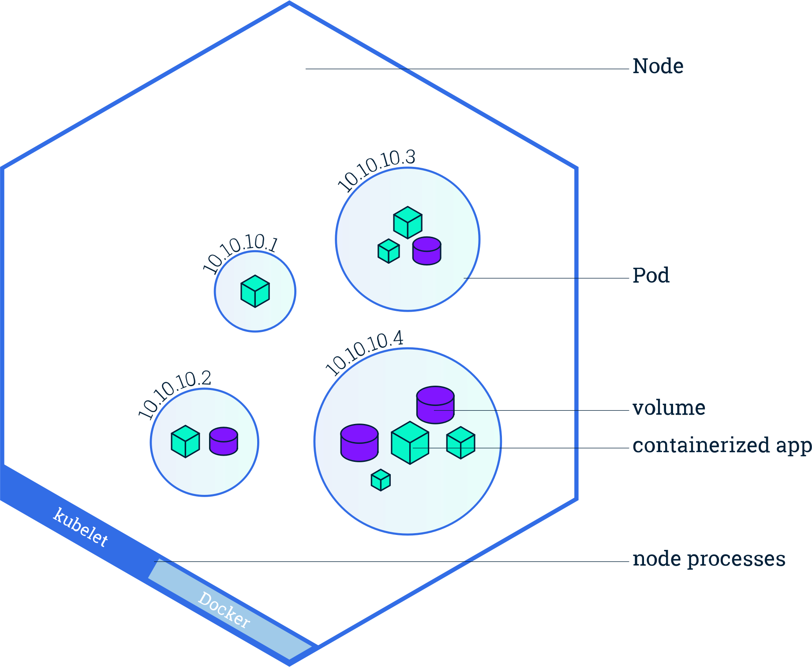

Learn how to configure Deployment strategies for zero-downtime updates, use health probes (liveness, readiness, startup) to keep your applications self-healing, set resource requests and limits for CPU, memory, and ephemeral storage, and attach persistent storage using PersistentVolumeClaims and StorageClasses.

To show how all the concepts in this post fit together, here is a complete Deployment manifest that uses deployment strategies, revision history, image pull policy, health probes, resource limits, and a PersistentVolumeClaim — all in one file:
apiVersion: apps/v1
kind: Deployment
metadata:
name: identity-server
namespace: identity
spec:
replicas: 3
revisionHistoryLimit: 5 # Keep last 5 ReplicaSets for rollback
strategy:
type: RollingUpdate # Gradually replace Pods (zero downtime)
rollingUpdate:
maxSurge: 1 # Allow 1 extra Pod during update
maxUnavailable: 0 # Never take a running Pod down during update
selector:
matchLabels:
app: identity-server
template:
metadata:
labels:
app: identity-server
spec:
containers:
- name: identity-server
image: identity-server:2.1.0 # Versioned tag (not :latest)
imagePullPolicy: IfNotPresent # Pull only if image is missing on the node
ports:
- containerPort: 8443
name: https
resources:
requests:
cpu: "250m" # 0.25 vCPU guaranteed
memory: "512Mi" # 512 MiB guaranteed
ephemeral-storage: "256Mi" # 256 MiB disk for logs/temp files
limits:
cpu: "1000m" # Max 1 vCPU (throttled beyond this)
memory: "1Gi" # Max 1 GiB (OOMKilled beyond this)
ephemeral-storage: "1Gi" # Max 1 GiB (Pod evicted beyond this)
startupProbe: # Handles slow JVM/identity-server boot
httpGet:
path: /healthz
port: 8443
scheme: HTTPS
initialDelaySeconds: 10
periodSeconds: 5
failureThreshold: 30 # 30 x 5s = up to 150s to start
livenessProbe: # Restarts container if stuck/dead
httpGet:
path: /healthz
port: 8443
scheme: HTTPS
initialDelaySeconds: 0 # Starts immediately after startup probe succeeds
periodSeconds: 10
failureThreshold: 3
readinessProbe: # Removes Pod from Service if not ready
httpGet:
path: /ready
port: 8443
scheme: HTTPS
initialDelaySeconds: 0
periodSeconds: 5
failureThreshold: 3
volumeMounts:
- name: server-config
mountPath: /opt/identity/etc/init
volumes:
- name: server-config
persistentVolumeClaim:
claimName: identity-server-config
---
apiVersion: v1
kind: PersistentVolumeClaim
metadata:
name: identity-server-config
namespace: identity
spec:
accessModes:
- ReadWriteOnce
storageClassName: local-path
resources:
requests:
storage: 1Gi
The sections below explain each of these features in detail.
Kubernetes supports different strategies for updating Pods in a Deployment. The strategy determines how old Pods are replaced with new ones.
spec:
strategy:
type: RecreateUse when the application cannot run multiple versions at the same time (e.g., database migrations that require exclusive access).
spec:
strategy:
type: RollingUpdate
rollingUpdate:
maxSurge: 25%
maxUnavailable: 25%| Field | What it does | Example (replicas = 4) |
|---|---|---|
maxSurge |
Number of extra Pods allowed during the update | 25% → 1 extra Pod can be created |
maxUnavailable |
Number of Pods allowed to be unavailable | 25% → 1 Pod can go down |
Benefits: zero downtime, safer deployments, and automatic rollback if health checks fail.
spec:
revisionHistoryLimit: 1010.Each Deployment update creates a new ReplicaSet. Old ones are preserved so you can roll back to previous versions.
revisionHistoryLimit: 3 → only the last 3 versions are stored; older ones are deleted
automatically.| Trade-off | Impact |
|---|---|
| Lower value | Fewer rollback options, saves cluster resources |
| Higher value | More rollback flexibility, more storage usage |
| Policy | Behaviour | Best for |
|---|---|---|
IfNotPresent |
Pull image only if not already on the node | Faster startup; local/dev clusters |
Always |
Always pull from registry, even if present | Ensures latest version; production with mutable tags |
Never |
Never pull; use only local images | Air-gapped environments or pre-loaded images |
containers:
- name: my-app
image: my-app:latest
imagePullPolicy: Always:latest tag, Kubernetes defaults to Always.
For versioned tags (e.g., :1.2.3), the default is IfNotPresent.
Prefer explicit versioned tags in production to avoid surprises.
Kubernetes uses probes to monitor the health of containers. Each probe type serves a distinct purpose.
Checks whether the container is still alive. If the probe fails, the container is restarted.
livenessProbe:
httpGet:
path: /healthz
port: 8080
initialDelaySeconds: 15
periodSeconds: 10
failureThreshold: 3| Field | Purpose |
|---|---|
initialDelaySeconds |
Time to wait before the first check |
periodSeconds |
Interval between checks |
failureThreshold |
Consecutive failures before the container is restarted |
Use to detect stuck or deadlocked applications that are running but no longer functioning.
Checks whether the Pod is ready to serve traffic. If the probe fails, the Pod is removed from the Service load balancer (no traffic is sent to it), but it is not restarted.
readinessProbe:
httpGet:
path: /ready
port: 8080
initialDelaySeconds: 5
periodSeconds: 5
failureThreshold: 3| Probe | On failure |
|---|---|
| Liveness | Container is restarted |
| Readiness | Pod is removed from Service endpoints (no traffic) |
Use to prevent sending traffic to Pods that are temporarily overloaded or still initializing dependencies.
Used for slow-starting applications. While the startup probe is running, liveness and readiness probes are disabled. Once the startup probe succeeds, the other probes take over.
startupProbe:
exec:
command:
- cat
- /tmp/healthy
initialDelaySeconds: 10
failureThreshold: 30
periodSeconds: 10Use for heavy applications (e.g., identity servers, JVM-based apps) that need extended time to boot. Without a startup probe, a slow-starting container might be killed by the liveness probe before it finishes initializing.
Health probes are sent directly to the Pod by the kubelet running on the node —
they never go through the Service. The kubelet calls the probe endpoint directly on the Pod's IP and container port:
http://<pod-ip>:<container-port>/healthzThe Service is completely bypassed during health checks. The Service is used only for application traffic:
targetPort
on the Pod (port → targetPort).| Path | Used for | Goes through Service? |
|---|---|---|
| kubelet → Pod (direct, via pod IP) | Health probes (liveness, readiness, startup) | No |
| Client → Ingress → Service → Pod | Application traffic | Yes |
Every container in a Pod can declare requests (guaranteed minimum) and limits
(maximum allowed). Kubernetes uses these to schedule Pods onto Nodes and enforce resource boundaries.
containers:
- name: my-app
image: my-app:1.0
resources:
requests:
cpu: "250m"
memory: "256Mi"
ephemeral-storage: "500Mi"
limits:
cpu: "500m"
memory: "512Mi"
ephemeral-storage: "1Gi"| Resource | Unit | Request (minimum guaranteed) | Limit (maximum allowed) | What happens on breach |
|---|---|---|---|---|
| CPU | m (millicores). 1000m = 1 vCPU |
Scheduler reserves this much CPU on a Node | Container is throttled (slowed down), not killed | Throttling — slower performance |
| Memory | Mi, Gi |
Scheduler reserves this much memory | Container is killed if it exceeds the limit | OOMKilled — container is terminated and restarted |
| Ephemeral Storage | Mi, Gi |
Disk space reserved for logs, temp files, emptyDir | Pod is evicted if it exceeds the limit | Pod eviction — Pod is removed from the Node |
Setting the right values requires understanding your application's actual resource consumption:
kubectl top pods -n <namespace>
kubectl top nodes| Factor | Impact on resources |
|---|---|
| Application type | CPU-intensive apps (APIs, ML) need more CPU; memory-intensive apps (caches, JVM) need more memory |
| Traffic patterns | Bursty traffic needs higher limits relative to requests; steady traffic can have tighter limits |
| Startup behaviour | JVM/heavy apps spike CPU and memory at boot — set limits to cover the startup peak |
| Number of replicas | More replicas = each can have lower resources; fewer replicas = each needs more |
| Node capacity | Requests must fit on available Nodes; oversized requests cause scheduling failures (Pending Pods) |
| Log and temp file volume | Applications that write large logs or temp files need adequate ephemeral-storage |
Pods are ephemeral — when they restart, all data on disk is lost. Persistent Volumes (PV) and Persistent Volume Claims (PVC) let you attach durable storage that survives Pod restarts.
spec:
template:
spec:
containers:
- name: my-app
volumeMounts:
- name: persistent-config
mountPath: /opt/config
volumes:
- name: persistent-config
persistentVolumeClaim:
claimName: persistent-config-iam-admin-0apiVersion: v1
kind: PersistentVolumeClaim
metadata:
name: persistent-config-iam-admin-0
namespace: my-namespace
spec:
accessModes:
- ReadWriteOnce
resources:
requests:
storage: 1Gi
storageClassName: local-path| Access Mode | Meaning |
|---|---|
ReadWriteOnce |
Volume can be mounted as read-write by a single Node |
ReadOnlyMany |
Volume can be mounted as read-only by multiple Nodes |
ReadWriteMany |
Volume can be mounted as read-write by multiple Nodes |
A StorageClass defines how storage is dynamically provisioned. When a PVC references a
StorageClass, Kubernetes automatically creates the underlying volume.
storageClassName.kubectl get storageclassIf no storageClassName is specified in the PVC, Kubernetes uses the cluster's default StorageClass
(marked with (default) in the output).
| Environment | StorageClass | Notes |
|---|---|---|
| Local (k3s, k3d) | local-path |
Stores data on the node's disk. Not for production. |
| AWS | gp2, gp3 |
EBS-backed volumes |
| Azure | standard, premium |
Managed disk storage |
| GCP | standard, ssd |
Persistent Disk |
| On-prem | nfs, ceph, longhorn |
Shared or distributed storage |
hostPath is a local-only volume type for development. It maps a directory on the host into the Pod.
Unlike a PVC, it doesn't support dynamic provisioning, replication, or portability.
| Concept | Key takeaway |
|---|---|
| Recreate strategy | Causes downtime; deletes all Pods before creating new ones |
| RollingUpdate strategy | Zero downtime; gradually replaces Pods (default) |
revisionHistoryLimit |
Controls how many old ReplicaSets (rollback versions) are kept |
imagePullPolicy |
Controls when images are pulled from the registry |
| Liveness probe | Restarts the container if the application is dead or stuck |
| Readiness probe | Removes the Pod from Service endpoints if not ready for traffic |
| Startup probe | Handles slow-starting apps; disables other probes until success |
| Resource requests/limits | Controls CPU, memory, and ephemeral-storage allocation per container |
| PersistentVolumeClaim | Requests durable storage that survives Pod restarts |
| StorageClass | Defines how storage is dynamically provisioned |
RollingUpdate strategy in production to avoid downtime. Reserve Recreate
for cases where only one version can run at a time.requests and limits for CPU, memory, and ephemeral-storage on every
container. Profile actual usage before choosing values.:1.2.3) instead of :latest in production to ensure
reproducible deployments.